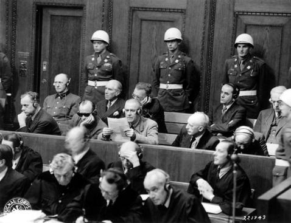

Directions: Work through the five stations in order. The stations run in the order of the record: persecution, refusal, murder documented, rescue attempted, and judgment. Two stations are labeled summaries, prepared for this lesson and marked as summaries on their face. Two stations print documents word for word, with cuts marked. At each station, answer both questions. At the end, build the lesson's timeline from the five documents.
Source: Teaching summary prepared for this lesson from the text of the Nuremberg Laws of September 15, 1935. This station is a summary of the laws' provisions, stated plainly. It is not a transcription.
The Reich Citizenship Law divided the people of Germany into citizens and subjects. Only a person of German or related blood could be a citizen of the Reich, with the right to vote and to hold public office. Jews were classified as subjects of the state, not citizens. They lost the vote, and Jews were removed from public office and the civil service. A companion law, the Law for the Protection of German Blood and German Honor, forbade marriage between Jews and citizens of German or related blood, and forbade Jews to employ German women under the age of forty-five as household workers. Jews were also forbidden to display the national flag. Later decrees under these laws defined who counted as a Jew by ancestry and extended the exclusion to schools, professions, and property.
What did the Reich Citizenship Law take from Jews, and in what words did it divide the population? Name the two categories the law created.
Who wrote this law, and who would have enforced it? What does the document show about whether the persecution was the work of a fringe group or of the state itself?
Source: Teaching summary prepared for this lesson from the refugee record of 1938 and 1939, including the passenger record of the ship St. Louis and later research by the United States Holocaust Memorial Museum. This station is a summary, not a transcription.
In July 1938, delegates from thirty-two nations met at Evian in France and, with few exceptions, declined to admit more Jewish refugees. In May 1939 the German ship St. Louis sailed from Hamburg carrying 937 Jewish passengers, most of them holding landing permits for Cuba. The Cuban government invalidated most of the permits before the ship arrived, and only a small number of passengers were allowed to land. The ship then stood off the coast of Florida. The United States did not admit the passengers, and Canada also refused them. The St. Louis returned to Europe in June 1939, and its passengers were divided among Great Britain, France, Belgium, and the Netherlands. Later research established that about a quarter of the passengers were murdered in the Holocaust, most of them among those who had been sent to countries that Germany later occupied.
Name what each government did in this record: Cuba, the United States, and Canada. Then state what the four European countries did when the ship returned.
What was known in 1939 about the danger facing Jews in Germany, from Station 1 and from the reading? What does the later finding about the passengers add to the 1939 record?
Source: Cable from General Dwight D. Eisenhower to General George C. Marshall, April 12, 1945, printed word for word from the audited record. Edition: United States Holocaust Memorial Museum, Holocaust Encyclopedia, punctuation modernized. The cut at the opening is marked in the text.
Cable from General Dwight D. Eisenhower to General George C. Marshall, April 12, 1945.
[...] the most interesting, although horrible, sight that I encountered during the trip was a visit to a German internment camp near Gotha. The things I saw beggar description. While I was touring the camp I encountered three men who had been inmates and by one ruse or another had made their escape. I interviewed them through an interpreter. The visual evidence and the verbal testimony of starvation, cruelty and bestiality were so overpowering as to leave me a bit sick. In one room, where they were piled up twenty or thirty naked men, killed by starvation, George Patton would not even enter. He said that he would get sick if he did so. I made the visit deliberately, in order to be in position to give first-hand evidence of these things if ever, in the future, there develops a tendency to charge these allegations merely to "propaganda."
What two kinds of evidence does Eisenhower name in the cable, and from whom did he take testimony? Answer from the text.
Eisenhower writes that he made the visit deliberately. For what stated purpose, in his own words? What future claim was he answering in advance?
Source: Teaching summary prepared for this lesson from the record of the War Refugee Board. This station is a summary, not a transcription.
The War Refugee Board was created by the president in January 1944, after officials in the Treasury Department reported that the government had blocked rescue efforts and refugee admissions for years. The Board worked through the last year of the war. It pressed neutral countries to accept refugees, funded rescue operations in Europe, sent warnings to Germany and its allies, and worked to move Jews out of territory Germany still held. In Budapest, Hungary, the Board supported the Swedish diplomat Raoul Wallenberg, who arrived in July 1944 with funding the Board helped arrange. Wallenberg issued protective papers, set up houses under Swedish protection, and intervened at deportation points. Thousands of Hungarian Jews survived because of that work. After the war the Board estimated that its operations had helped to save tens of thousands of people. That figure is the Board's own estimate, and it is stated here as an estimate.
What did the War Refugee Board do, and what did its agent in Budapest do? Name two actions from the station text for each.
The Board was created in January 1944. Using Stations 1 and 2, state what had already happened by then, and what the Board's date shows about the years in which the reports were arriving and no rescue agency existed.
Source: Opening statement of Justice Robert H. Jackson, chief prosecutor for the United States, International Military Tribunal, Nuremberg, November 21, 1945, printed word for word from the audited record. Edition: Robert H. Jackson Center. Cuts are marked with ellipses.

May it please Your Honors:
The privilege of opening the first trial in history for crimes against the peace of the world imposes a grave responsibility. The wrongs which we seek to condemn and punish have been so calculated, so malignant, and so devastating, that civilization cannot tolerate their being ignored, because it cannot survive their being repeated. That four great nations, flushed with victory and stung with injury stay the hand of vengeance and voluntarily submit their captive enemies to the judgment of the law is one of the most significant tributes that Power has ever paid to Reason.
[...]
There is no count in the Indictment that cannot be proved by books and records. The Germans were always meticulous record keepers, and these defendants had their share of the Teutonic passion for thoroughness in putting things on paper. Nor were they without vanity. They arranged frequently to be photographed in action. We will show you their own films.
From what evidence does Jackson say the prosecution will prove its case? Name the three kinds of record he lists in the second passage.
Jackson writes that the four nations stayed the hand of vengeance. What did they do instead, and why does he call that choice a tribute that Power paid to Reason?
Build the lesson's timeline from the five documents. For each step, enter the years, the station that documents it, what was known at the time, and what was done or not done.
| Step | Years and station | What was known | What was done or not done |
|---|---|---|---|
| Persecution | |||
| Refusal | |||
| Murder | |||
| Documentation | |||
| Judgment |
Close the timeline in a short paragraph. At which step in the timeline did the distance between what was known and what was done stand widest? Defend your answer from the documents, and name the station for each fact you use.
What did the law take from Jews, and what two categories did it create? The Reich Citizenship Law created the categories of citizen and subject. Only a person of German or related blood could be a citizen, with the right to vote and hold public office. Jews were classified as subjects. They lost the vote, and they were removed from public office and the civil service. The companion law forbade marriage between Jews and citizens of German or related blood.
Who wrote the law, and what does that show? The law was made by the German state itself, issued as national law in 1935 and enforced by its courts, offices, and police, with later decrees extending it to schools, professions, and property. The document shows persecution carried out by the government through law, not the work of a fringe group acting outside the state.
What did each government do? Cuba invalidated most of the landing permits and allowed only a small number of passengers to land. The United States did not admit the passengers while the ship stood off Florida, and Canada refused them as well. When the ship returned to Europe, Great Britain, France, Belgium, and the Netherlands divided the passengers among them.
What was known in 1939, and what does the later finding add? By 1939 the persecution was public law and public violence. The Nuremberg Laws had stripped Jews of citizenship in 1935, and Kristallnacht in November 1938 had been reported around the world. The passengers' danger was therefore known in kind, even if the later scale of murder was not. The later finding, that about a quarter of the passengers were murdered, most of them from the countries Germany later occupied, converts the refusal from an administrative decision into a documented part of the outcome.
What two kinds of evidence does Eisenhower name, and from whom did he take testimony? He names visual evidence, what he saw himself on the tour of the camp near Gotha, and verbal testimony. The testimony came from three men who had been inmates of the camp and had escaped, whom he interviewed through an interpreter.
For what purpose did he make the visit deliberately? In his own words, he came in order to be in position to give first-hand evidence of these things if ever, in the future, there developed a tendency to charge the allegations merely to propaganda. He was answering, in advance, the future claim that reports of the camps were invented wartime propaganda, and he answered it by placing the supreme commander, and then members of Congress and journalists, in front of the evidence itself.
What did the Board do, and what did Wallenberg do? The Board pressed neutral countries to accept refugees, funded rescue operations in Europe, sent warnings to Germany and its allies, and worked to move Jews out of territory Germany still held. In Budapest it supported Raoul Wallenberg, who issued protective papers, set up houses under Swedish protection, and intervened at deportation points. Thousands of Hungarian Jews survived because of that work. The Board's postwar figure of tens of thousands saved is its own estimate and should be credited as an estimate.
What does the January 1944 date show? By January 1944 the persecution in law was nine years old, Kristallnacht was five years past, the St. Louis had been turned away, the ghettos had been operating since 1939 and 1940, the shooting units had been murdering since 1941, and the killing centers since 1942. Allied governments had condemned the extermination in December 1942. A rescue agency with presidential authority arrived only in the war's last year, which is the record the writing task in this lesson takes up.
From what evidence will the prosecution prove its case? Jackson names books and records, the defendants' own paper record, kept with what he calls a passion for thoroughness in putting things on paper. He adds the photographs the defendants arranged to have taken of themselves in action, and their own films, which the prosecution will show in the courtroom.
What did the four nations do instead of vengeance? Flushed with victory and stung with injury, they stayed the hand of vengeance and voluntarily submitted their captive enemies to the judgment of the law. Jackson calls that choice one of the most significant tributes that Power has ever paid to Reason, because the victors held the power to punish without a trial and chose evidence, charges, and a courtroom instead.
Persecution: 1933 to 1939, Station 1 with the reading. Known in full, because it was public law and public violence. Done: the German state stripped citizenship, barred intermarriage, and arrested about thirty thousand Jewish men on Kristallnacht. Refusal: 1938 to 1939, Station 2. Known: the persecution and the violence, reported worldwide. Not done: Evian admitted few, and Cuba, the United States, and Canada turned the St. Louis away; about a quarter of its passengers were later murdered. Murder: 1939 to 1945, from the reading and the guided notes. Known in Allied capitals from 1942, with public condemnation that December. Done on the rescue side only from January 1944, by the War Refugee Board, Station 4. Documentation: April 1945, Station 3. Eisenhower ordered Ohrdruf documented and witnessed so the evidence would stand against a future charge of propaganda. Judgment: 1945 to 1946, Station 5. The victors submitted the surviving leaders to a trial proved from the Germans' own records. Closing paragraphs earn full credit when the widest distance is defended from documents rather than asserted. The strongest answers usually choose 1942 to 1944, when condemnation was public and the killing centers were confirmed while no rescue agency yet existed, though a well documented answer for 1938 to 1939 also earns full credit.